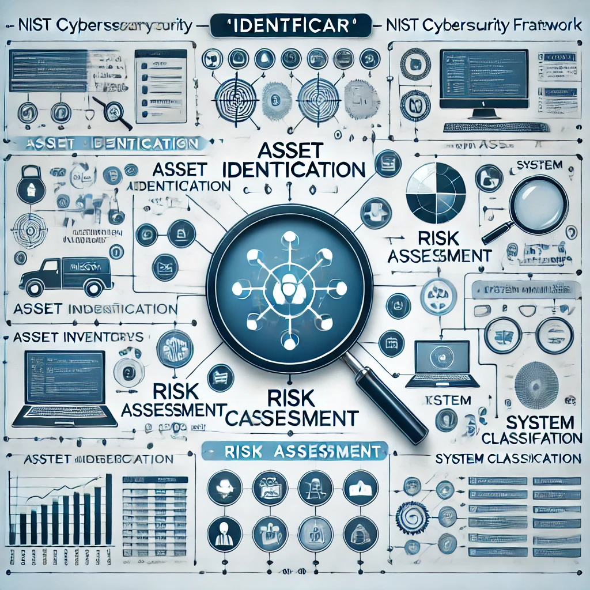

Identificar
A função "Identificar" envolve o entendimento e a gestão do risco de cibersegurança para os sistemas, ativos e operações de uma organização. Isso ajuda a garantir que todos os recursos críticos estejam identificados e protegidos adequadamente.
Exemplo: Realizar um inventário completo de ativos de TI, como servidores, computadores, dispositivos móveis, redes, etc., para entender onde a proteção é necessária. Além disso, identificar os riscos envolvidos, como vulnerabilidades ou dependências externas..
Proteger
A função "Proteger" visa implementar controles de segurança para proteger os sistemas e dados críticos contra ameaças identificadas.
Exemplo: Implementação de autenticação multifatorial (MFA), criptografia de dados sensíveis, controle de acesso baseado em funções (RBAC) e treinamento regular dos funcionários sobre práticas de segurança cibernética..
Detectar
A função "Detectar" envolve a implementação de atividades para identificar rapidamente a ocorrência de eventos de segurança, como ataques cibernéticos ou vulnerabilidades.
Exemplo: Implementação de sistemas de monitoramento contínuo, como sistemas de detecção de intrusão (IDS), para identificar tráfego de rede anômalo ou comportamentos incomuns em sistemas. Além disso, pode incluir o uso de ferramentas de log e análise de eventos..
Responder
A função "Responder" envolve o desenvolvimento e a implementação de estratégias para lidar com incidentes de segurança, garantindo uma resposta rápida e eficaz.
Exemplo: Ter uma equipe de resposta a incidentes treinada para isolar sistemas afetados e minimizar danos após um ataque.
Recuperar
A função "Recuperar" envolve a capacidade de restaurar rapidamente os serviços e sistemas após um incidente de segurança, minimizando o impacto e garantindo a continuidade dos negócios.
Exemplo: Após um ataque cibernético bem-sucedido, a recuperação pode incluir a restauração de sistemas a partir de backups, a correção de vulnerabilidades exploradas durante o ataque e a realização de análises para entender a causa raiz do incidente. Além disso, pode incluir a atualização das políticas de segurança com base nas lições aprendidas..
Governar
A governança no NIST CSF envolve definir políticas, processos e responsabilidades para alinhar a segurança cibernética aos objetivos da organização. No CSF 2.0, a função "Governar" (Govern) reforça a importância da gestão de riscos e conformidade.
Exemplo: Após um ataque cibernético, a governança envolve ações como a atualização das políticas de segurança para reforçar os controles de acesso e protocolos de resposta a incidentes. A gestão de riscos reavalia a exposição da organização a novas ameaças, enquanto a conformidade garante que todas as ações corretivas estejam alinhadas com normas como a ISO 27001 e a LGPD. O monitoramento contínuo é reforçado para detectar precocemente ameaças e garantir que medidas corretivas sejam eficazes a longo prazo.